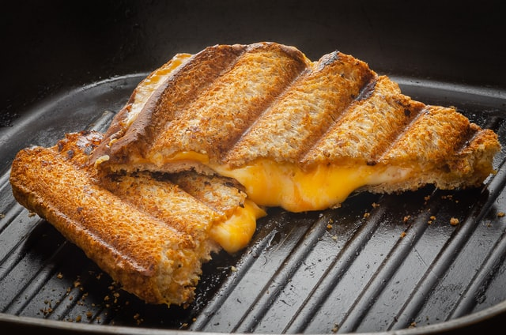

Grilled Cheese

Ein köstlicher Snack für zwischendurch.
Wird benötigt:
- Weißes Toastbrot
- Cheddar scheibenkäse
- Butter
- Optional: Wacholderschinken
Zubereitung:
- die äußeren Toastseiten mit Butter beschmieren
- die pfanne mit Butter auf mitlerer Hitze erhitzen
- Mit doppelt cheddar und optional eine scheibe Wacholderschinken belegen
- in die Pfanne legen und regelmäßig drehen bis der käse geschmolzen ist und
die äußeren seiten braun getoastet sind.
Guten Hunger!